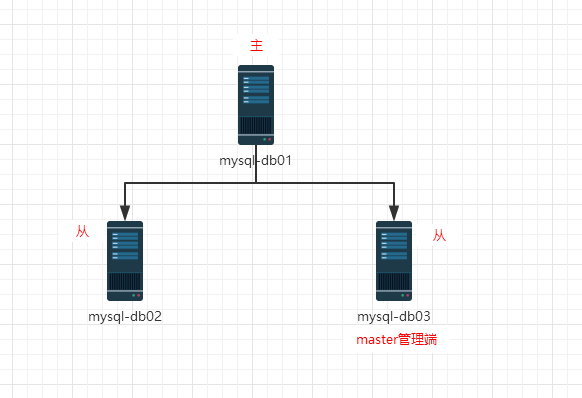

7.配置VIP漂移
| 主机名 | IP地址（NAT） | 漂移VIP | 描述 |
|---|---|---|---|
| mysql-db01 | eth0:192.168.0.51 | VIP：192.168.0.60 | 系统：CentOS6.5（6.x都可以）安装：mysql5.6 |
| mysql-db02 | eth0:192.168.0.52 | VIP：192.168.0.60 | 系统：CentOS6.5（6.x都可以） 安装：mysql5.6 |
| mysql-db03 | eth0:192.168.0.53 | VIP：192.168.0.60 | 系统：CentOS6.5（6.x都可以） 安装：mysql5.6 |
7.1 IP漂移的两种方式
- 通过keepalived的方式，管理虚拟IP的漂移
- 通过MHA自带脚本方式，管理虚拟IP的漂移
7.2 MHA脚本管理方式
（1）获取管理脚本master_ip_failover
提示：yum安装的manager是没有这个脚本的。 我们需要从manager的源码包里复制一个。
[root@mysql-db03 ~]# ll mha4mysql-manager-0.56.tar.gz
-rw-r--r--. 1 root root 113914 Sep 4 18:43 mha4mysql-manager-0.56.tar.gz
[root@mysql-db03 ~]# tar xf mha4mysql-manager-0.56.tar.gz
[root@mysql-db03 ~]# cd mha4mysql-manager-0.56
[root@mysql-db03 mha4mysql-manager-0.56]# cd samples/scripts/
[root@mysql-db03 scripts]# ll
total 32-rwxr-xr-x. 1 4984 users 3648 Mar 31 2014 master_ip_failover #这就是管理虚拟IP的脚本
-rwxr-xr-x. 1 4984 users 9870 Mar 31 2014 master_ip_online_change
-rwxr-xr-x. 1 4984 users 11867 Mar 31 2014 power_manager
-rwxr-xr-x. 1 4984 users 1360 Mar 31 2014 send_report
[root@mysql-db03 scripts]# cp master_ip_failover /usr/local/bin/ #复制到/usr/local/bin目录下
[root@mysql-db03 scripts]# which master_ip_failover
/usr/local/bin/master_ip_failover
（2）修改mha配置文件
[root@mysql-db03 scripts]# vim /etc/mha/mha1.cnf
[root@mysql-db03 scripts]# cat /etc/mha/mha1.cnf
[server default]
manager_log=/var/log/mha/mha1/manager
manager_workdir=/var/log/mha/mha1
master_binlog_dir=/usr/local/mysql/data
master_ip_failover_script=/usr/local/bin/master_ip_failover #添加脚本位置password=123123
ping_interval=2
repl_password=123123
repl_user=rep
ssh_user=root
user=mha
#candidate_master=1 #留着备用的注释项
#check_repl_delay=0 #留着备用的注释项
[server1]
hostname=192.168.0.51
port=3306
[server2]
hostname=192.168.0.52
port=3306
[server3]
hostname=192.168.0.53
port=3306
（3）修改源程序自带VIP漂移脚本
#在下边的脚本里添加如下4行代码：
[root@mysql-db03 scripts]# sed -n '34,37p' /usr/local/bin/master_ip_failover
my $vip = '192.168.0.60/24'; #定义VIP
my $key = '0'; #定义网卡后缀数值，如果eth0就是0，eth1就是1
my $ssh_start_vip = "/sbin/ifconfig eth0:$key $vip"; #绑定VIP的命令
my $ssh_stop_vip = "/sbin/ifconfig eth0:$key down"; #关闭VIP的命令
特别提示： 由于自带的模板脚本特别的坑，需要修改的地方太多，因此，同学们可以直接拷贝脚本文件放到/usr/local/bin目录下，并赋予x权限。
修改后的master_ip_failover脚本的内容如下：
[root@mysql-db03 ~]# cat /usr/local/bin/master_ip_failover
#!/usr/bin/env perl
use strict;
use warnings FATAL => 'all';
use Getopt::Long;
my (
$command, $ssh_user, $orig_master_host,
$orig_master_ip, $orig_master_port, $new_master_host,
$new_master_ip, $new_master_port
);
my $vip = '192.168.0.60/24';
my $key = '0';
my $ssh_start_vip = "/sbin/ifconfig eth0:$key $vip";
my $ssh_stop_vip = "/sbin/ifconfig eth0:$key down";
GetOptions(
'command=s' => \$command,
'ssh_user=s' => \$ssh_user,
'orig_master_host=s' => \$orig_master_host,
'orig_master_ip=s' => \$orig_master_ip,
'orig_master_port=i' => \$orig_master_port,
'new_master_host=s' => \$new_master_host,
'new_master_ip=s' => \$new_master_ip,
'new_master_port=i' => \$new_master_port,
);
exit &main();
sub main {
if ( $command eq "stop" || $command eq "stopssh" ) {
my $exit_code = 1;
eval {
print "Disabling the VIP on old master:$orig_master_host \n";
&stop_vip();
$exit_code = 0;
};
if ($@) {
warn "Got Error: $@\n";
exit $exit_code;
}
exit $exit_code;
}
elsif ( $command eq "start" ) {
my $exit_code = 10;
eval {
print "Enabling the VIP - $vip on the new master - $new_master_host \n";
&start_vip();
$exit_code = 0;
};
if ($@) {
warn $@;
exit $exit_code;
}
exit $exit_code;
}
elsif ( $command eq "status" ) {
print "Checking the Status of the script..OK \n";
`ssh $ssh_user\@$orig_master_host \" $ssh_start_vip \"`;
exit 0;
}
else {
&usage();
exit 1;
}
}
sub start_vip() {
`ssh $ssh_user\@$new_master_host \" $ssh_start_vip \"`;
}
sub stop_vip() {
`ssh $ssh_user\@$orig_master_host \" $ssh_stop_vip \"`;
}
sub usage {
print
"Usage: master_ip_failover --command=start|stop|stopssh|status --orig_master_host=host --orig_master_ip=ip --orig_master_port=port --new_master_host=host --new_master_ip=ip --new_master_port=port\n";
}
（4）重启动mha管理端
[root@mysql-db03 ~]# ps -ef | grep mha | grep -v grep #查看mha进程
root 14138 13211 0 19:22 pts/3 00:00:00 perl /usr/bin/masterha_manager --conf=/etc/mha/mha1.cnf --remove_dead_master_conf --ignore_last_failover
[root@mysql-db03 ~]# pkill perl #杀掉perl进程
[1]+ Exit 1 nohup masterha_manager --conf=/etc/mha/mha1.cnf --remove_dead_master_conf --ignore_last_failover < /dev/null > /var/log/mha/mha1/manager.log 2>&1
[root@mysql-db03 ~]# ps -ef | grep mha | grep -v grep #查看mha进程
[root@mysql-db03 ~]# nohup masterha_manager --conf=/etc/mha/mha1.cnf --remove_dead_master_conf --ignore_last_failover < /dev/null > #启动mha进程 /var/log/mha/mha1/manager.log 2>&1 &
提示： 如果启动mha进程失败，需要进行mha的连接检测
masterha_check_ssh --conf=/etc/mha/mha1.cnfssh连接检测masterha_check_repl --conf=/etc/mha/mha1.cnf主从复制检测
7.3 VIP漂移脚本验证测试
架构初始状态

（1）查看mysql-db01网络状态
2）停掉mysql-db01的MySQL数据库服务
[root@mysql-db01 ~]# /etc/init.d/mysqld stop
Shutting down MySQL..... SUCCESS!
[root@mysql-db01 ~]# ifconfig #VIP消失了
eth0 Link encap:Ethernet HWaddr 00:0C:29:59:7C:EF
inet addr:192.168.0.51 Bcast:192.168.0.255 Mask:255.255.255.0
inet6 addr: fe80::20c:29ff:fe59:7cef/64 Scope:Link
UP BROADCAST RUNNING MULTICAST MTU:1500 Metric:1
RX packets:316130 errors:0 dropped:0 overruns:0 frame:0
TX packets:58058 errors:0 dropped:0 overruns:0 carrier:0 collisions:0 txqueuelen:1000
RX bytes:363635227 (346.7 MiB) TX bytes:6462008 (6.1 MiB)
lo Link encap:Local Loopback
inet addr:127.0.0.1 Mask:255.0.0.0
inet6 addr: ::1/128 Scope:Host
UP LOOPBACK RUNNING MTU:16436 Metric:1
RX packets:69 errors:0 dropped:0 overruns:0 frame:0
TX packets:69 errors:0 dropped:0 overruns:0 carrier:0 collisions:0 txqueuelen:0
RX bytes:9752 (9.5 KiB) TX bytes:9752 (9.5 KiB)
（3）查看mysql-db02
[root@mysql-db02 ~]# ifconfig #VIP出现了
eth0 Link encap:Ethernet HWaddr 00:0C:29:4C:D5:92
inet addr:192.168.0.52 Bcast:192.168.0.255 Mask:255.255.255.0
inet6 addr: fe80::20c:29ff:fe4c:d592/64 Scope:Link
UP BROADCAST RUNNING MULTICAST MTU:1500 Metric:1
RX packets:287225 errors:0 dropped:0 overruns:0 frame:0
TX packets:47133 errors:0 dropped:0 overruns:0 carrier:0 collisions:0 txqueuelen:1000
RX bytes:361247254 (344.5 MiB) TX bytes:5159560 (4.9 MiB)
eth0:0 Link encap:Ethernet HWaddr 00:0C:29:4C:D5:92
inet addr:192.168.0.60 Bcast:192.168.0.255 Mask:255.255.255.0
UP BROADCAST RUNNING MULTICAST MTU:1500 Metric:1
lo Link encap:Local Loopback
inet addr:127.0.0.1 Mask:255.0.0.0
inet6 addr: ::1/128 Scope:Host UP LOOPBACK RUNNING MTU:16436 Metric:1
RX packets:45 errors:0 dropped:0 overruns:0 frame:0
TX packets:45 errors:0 dropped:0 overruns:0 carrier:0 collisions:0 txqueuelen:0
RX bytes:7718 (7.5 KiB) TX bytes:7718 (7.5 KiB)
（4）查看mysql-db03的主从同步情况
[root@mysql-db03 ~]# mysql -uroot -p123123 -e 'show slave status\G'
Warning: Using a password on the command line interface can be insecure.
*************************** 1. row ***************************
Slave_IO_State: Waiting for master to send event
Master_Host: 192.168.0.52 #mysql-db03的主库已经切换为mysql-db02
Master_User: rep
Master_Port: 3306
Connect_Retry: 60
Master_Log_File: mysql-bin.000008
Read_Master_Log_Pos: 271
Relay_Log_File: mysql-db03-relay-bin.000002
Relay_Log_Pos: 361
Relay_Master_Log_File: mysql-bin.000008
Slave_IO_Running: Yes
Slave_SQL_Running: Yes
（5）mysql-db01故障恢复
[root@mysql-db01 ~]# /etc/init.d/mysqld start
Starting MySQL. SUCCESS!
[root@mysql-db01 ~]# mysql -uroot -p123123
mysql> CHANGE MASTER TO MASTER_HOST='192.168.0.52', MASTER_PORT=3306, MASTER_AUTO_POSITION=1, MASTER_USER='rep', MASTER_PASSWORD='123123';
Query OK, 0 rows affected, 2 warnings (0.02 sec)
mysql> start slave;
Query OK, 0 rows affected, 1 warning (0.01 sec)
mysql> show slave status\G
*************************** 1. row ***************************
Slave_IO_State: Waiting for master to send event
Master_Host: 192.168.0.52
Master_User: rep
Master_Port: 3306
Connect_Retry: 60
Master_Log_File: mysql-bin.000008
Read_Master_Log_Pos: 271
Relay_Log_File: mysql-db01-relay-bin.000002
Relay_Log_Pos: 361
Relay_Master_Log_File: mysql-bin.000008
Slave_IO_Running: Yes
Slave_SQL_Running: Yes
（6）补上缺失的mha配置文件
[root@mysql-db03 ~]# vim /etc/mha/mha1.cnf
[root@mysql-db03 ~]# cat /etc/mha/mha1.cnf
[server default]
manager_log=/var/log/mha/mha1/manager
manager_workdir=/var/log/mha/mha1
master_binlog_dir=/usr/local/mysql/data
master_ip_failover_script=/usr/local/bin/master_ip_failover
password=123123
ping_interval=2
repl_password=123123
repl_user=rep
ssh_user=root
user=mha
[server1]
hostname=192.168.0.51
port=3306
[server2]
hostname=192.168.0.52
port=3306
[server3]
hostname=192.168.0.53
port=3306
（7）启动mha管理进程
[root@mysql-db03 ~]# ps -ef | grep mha | grep -v grep
[root@mysql-db03 ~]# nohup masterha_manager --conf=/etc/mha/mha1.cnf --remove_dead_master_conf --ignore_last_failover < /dev/null > /var/log/mha/mha1/manager.log 2>&1 &
[1] 14921
[root@mysql-db03 ~]# ps -ef | grep mha | grep -v grep
root 14921 13211 3 20:11 pts/3 00:00:00 perl /usr/bin/masterha_manager --conf=/etc/mha/mha1.cnf --remove_dead_master_conf --ignore_last_failover
此时的架构状态